Astrarium（アストラリウム）
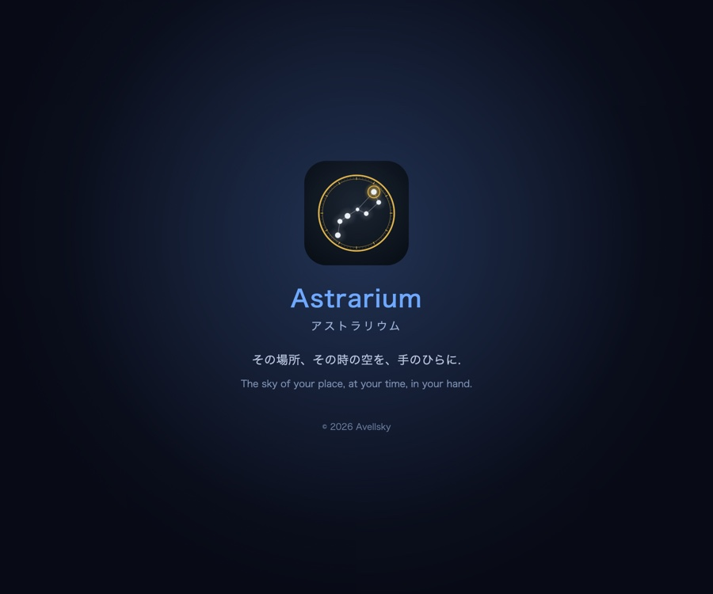
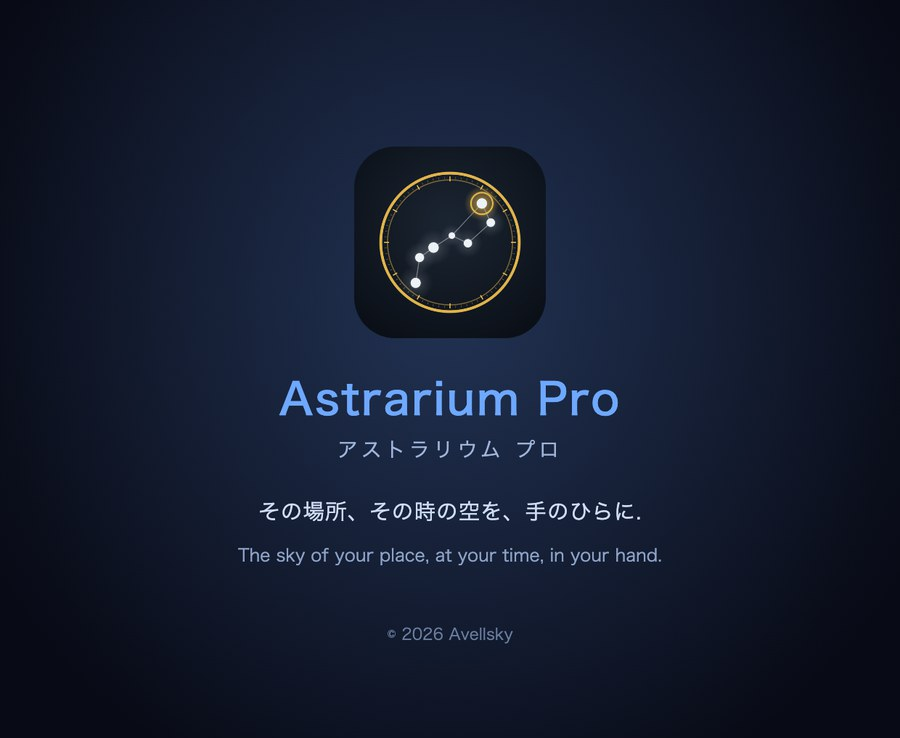
Astrarium とは
観測地と日時を決めれば、その場所・その時刻の空をそのまま描く プラネタリウムです。いま空にあるものを映すだけでなく、時刻を自由に動かして 過去と未来の空を再現し、惑星の満ち欠け、日食・月食、流星群、彗星までを 同じ星図の上で扱えます。
天体の位置計算はすべて端末の中で行います（惑星暦 JPL DE421、IAU の 歳差・章動、IERS の地球回転パラメータ）。電波の届かない観測地でも全機能が そのまま動きます。広告・アカウント登録はありません。
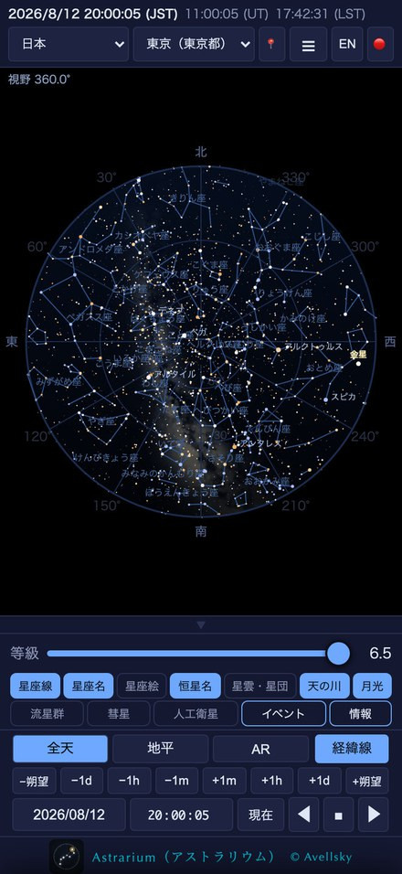
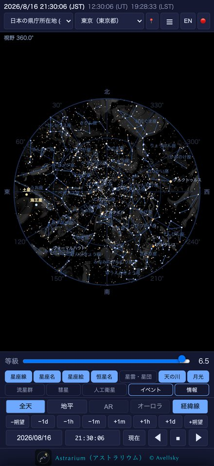
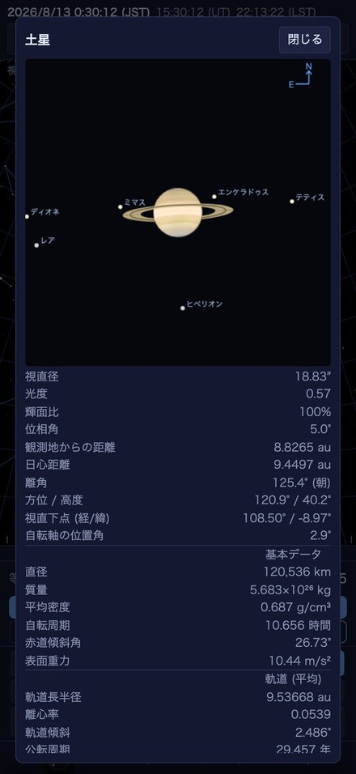
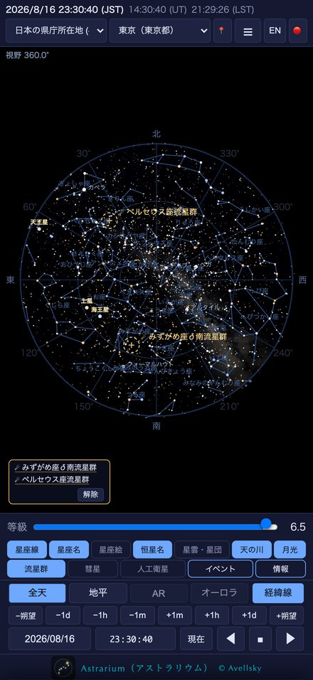
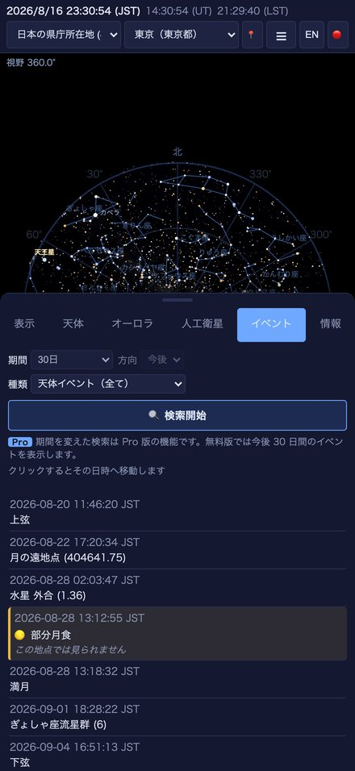
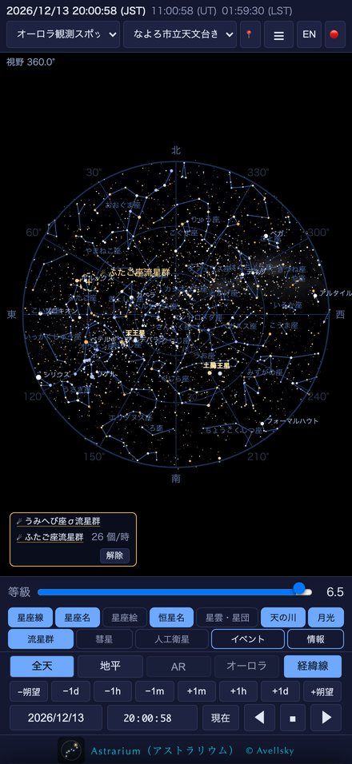
できること
- 全天モードと地平モード — 空全体の丸い図と、実際に見上げた 形の図。ピンチで 1 分角まで拡大できます
- 時刻を自由に動かす — 任意の日時へジャンプ、1〜6000 倍の 連続再生、朔望月送り、暦（カレンダー）からの日付選択。日時はすべて 観測地の時刻で表示します
- 天体をタップすれば、その場の数値 — 方位・高度・座標・距離・ 出没時刻が、時計を動かすとそのまま追従します
- 惑星の拡大表示 — 視直径・輝面比・距離・軌道要素・基本物理量、 木星／土星／火星の衛星の配置
- 月 — 月齢・輝面比・秤動・欠け際、満月の呼称
- 流星群カレンダー — 極大日時、輻射点高度、月明かりを織り込んだ 予想出現数
- 彗星・小惑星 — MPC／JPL から軌道要素を取り込んで星図に重ねます
- 4 種の経緯線、天の赤道・黄道・銀河面・子午線、写野角枠 （Seestar・DWARF・カメラレンズ）
- ナイトモード（赤色画面）、長時間露光、PNG／PDF 出力、 字幕つきデモ再生、極軸合わせ
- 日本語と英語 — 天体名・星座名・星雲星団の解説まで切り替わります
Apple Watch
iPhone に Astrarium を入れると、Apple Watch にも入ります （別に買うものはありません。watchOS 10.0 以降）。腕の上で読みたいのは これから数時間の空であって星表ではない — そう考えて、二つだけ置いています。 詳しくは iPhone / iPad 版マニュアルの第 12 章にあります。
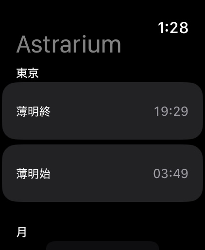
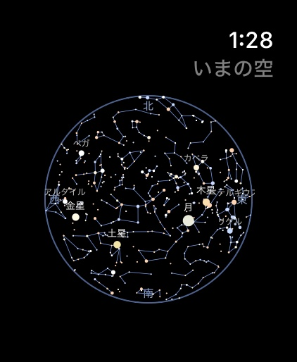
Astrarium Pro で増えるもの
人工衛星・AR・オーロラ予報は、別売のアプリ Astrarium Pro の 機能です。画面は無料版と同じで、入口も同じ場所にあります（無料版では、押すと 何ができるかの説明が出ます）。
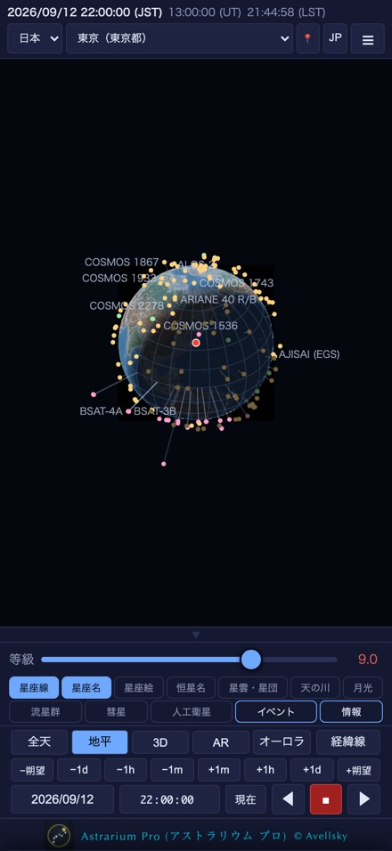
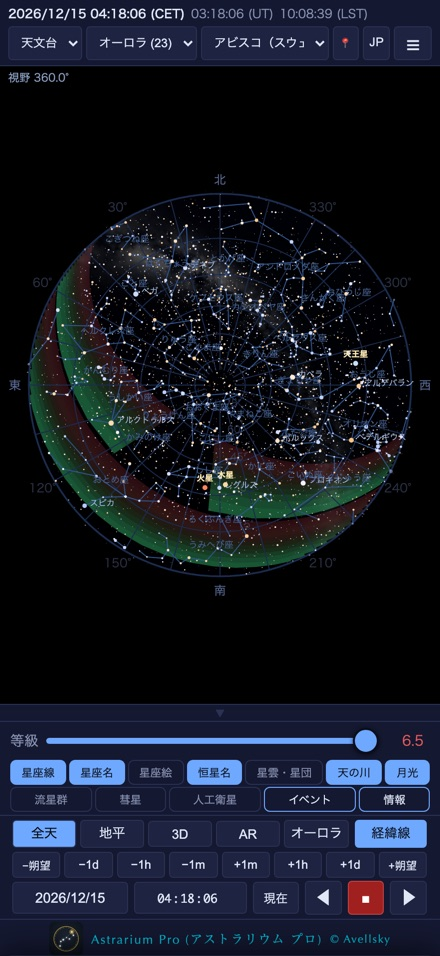
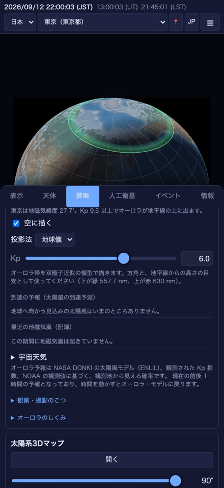
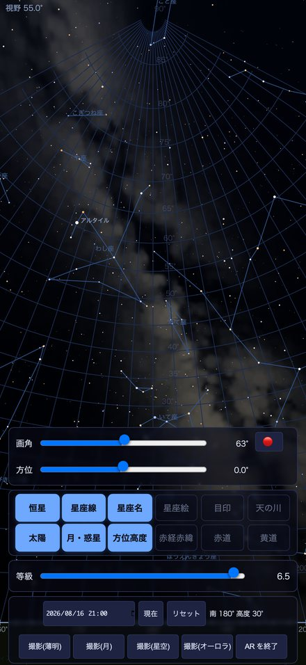
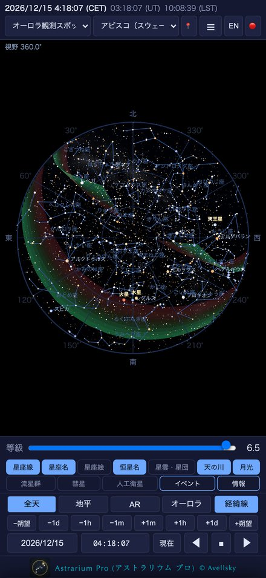
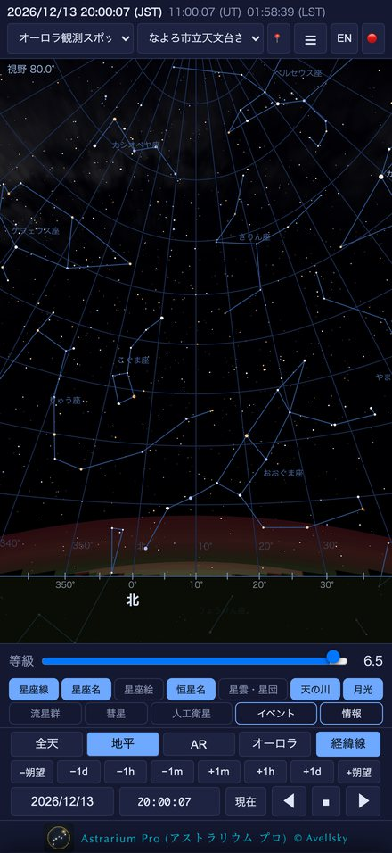
| 機能 | 無料版 | Pro 版 |
|---|---|---|
| 星図・惑星・流星群・彗星・イベント・出力 | ○ | ○ |
| 人工衛星（ISS・天宮・Starlink ほか、可視パス予報） | — | ○ 星図／世界地図／地球儀 |
| AR（カメラ映像に星図を重ねる・撮影） | 見本のみ | ○ |
| オーロラ予報（オーロラ帯・Kp・OVATION） | — | ○ |
| 深宇宙星表（追加ダウンロード） | — | ○ |
| イベントの範囲 | 今後 30 日 | 過去〜10 年先、系外惑星のトランジット、変光星 |
使用マニュアル（PDF）
| 版 | 日本語 | English |
|---|---|---|
| Astrarium（iPhone / iPad） | ||
| Astrarium（Android） | ||
| Astrarium（Mac） | ||
| Astrarium Pro（iPhone / iPad） |
画面の見かた、操作、流星群の出現数の計算、極軸合わせ、PNG／PDF 出力まで、 実機の画面を添えて説明しています。Mac 版は右パネルの構成とマウス・トラックパッドの 操作に合わせた別冊です。Pro 版には人工衛星・AR・オーロラ予報の章が加わります。
Android 版は画面が iPhone / iPad 版と同じなので、本文もほぼ共通です。 違うのは書き出したものの行き先（星図の PNG と AR の撮影は 「Pictures／Astrarium」、PDF は「ダウンロード／Astrarium」。共有フォルダなので アプリを削除しても残ります）と、AR で北を手で合わせる必要がない こと（端末が真北基準の向きを返すため）、それに位置情報の許可の道筋です。
In English
Astrarium is a planisphere and astronomical simulator for iPhone, iPad, Android, Mac and Apple Watch. Choose a place and a time and it draws that sky — not only the sky now, but any past or future one, with planetary phases, eclipses, meteor showers and comets on the same chart.
Every position is computed on the device (JPL DE421, the IAU precession and nutation models, IERS Earth orientation), so the whole app works where there is no signal. No ads, no account.
- All-sky and horizon views, pinch-zoom down to an arc minute
- Drive the clock: any date, ×1 to ×6000 playback, the synodic month, a calendar. Every date and time is the time at the observing site
- Tap anything and the figures follow the clock
- Planet close-ups with the rings and moons, and the physical data
- Meteor shower calendar with an expected rate that accounts for the radiant altitude, twilight and moonlight
- Comets and asteroids from the MPC and JPL
- Four coordinate grids, FOV frames, night-vision mode, PNG/PDF export, a captioned demo, polar alignment
On Apple Watch (watchOS 10.0 or later, installed with the iPhone app) there are two screens: Tonight — twilight, the Moon, the planets up with their bearing and altitude, the next satellite pass and any shower running — and a star chart holding the whole sky in one disc, which the Digital Crown moves up to twelve hours either way. Chapter 12 of the iPhone and iPad manual covers it.
Astrarium Pro, a separate app, adds satellites (chart, world map and globe, with visible-pass predictions), AR — the chart drawn over the camera image — the aurora forecast (NASA DONKI and NOAA OVATION), the deep-sky catalogue and a wider event search.